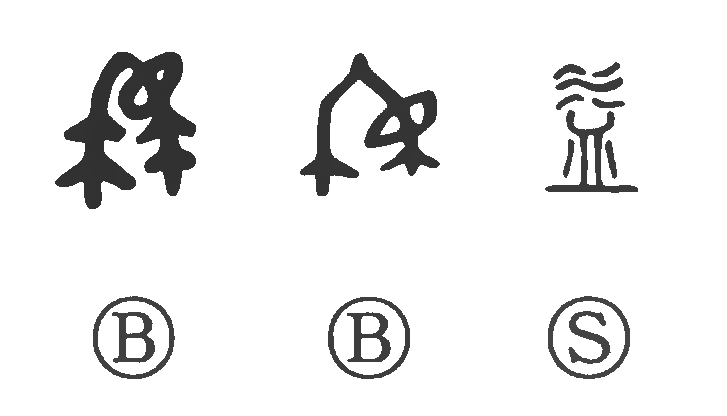

益.

Kun: masu | On: eki, yaku, itsu
benefit ・ advantage ・ profit ・ increase
Explanation
In its oldest, pictographic form, the graph sketches two branching ends of thread drawn together and tied into a knot. This figure is the original form of i—“to tie tight, to constrict” (kubiru)—and vividly shows the act of narrowing by binding. From this image of strands being brought together developed the later sense of adding to and producing benefit.